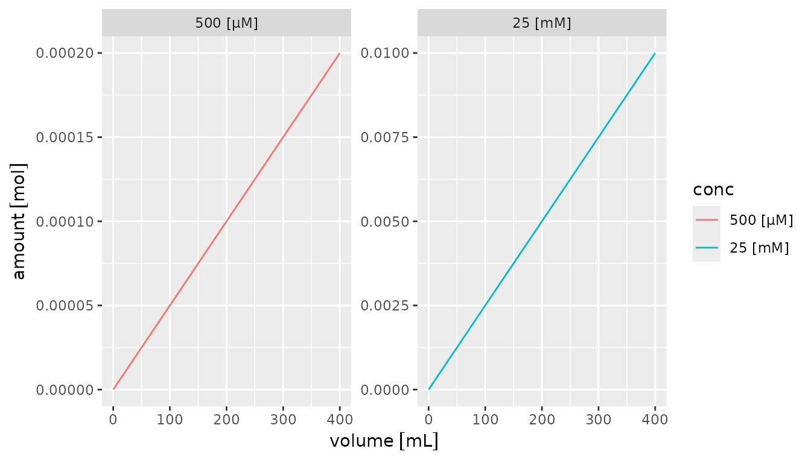
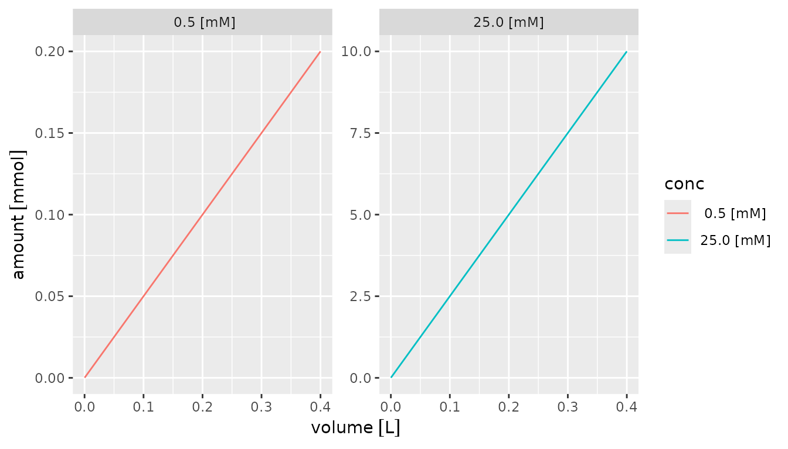

What are chemunits?
FIXME: point to [units::set_units()] documentation and [units::valid_udunits()]
Conversions
## 0.001 [kN]## 100 [cm*N]## 745.6999 [W]## 1.771845 [g]## 39.74683 [L]## 14 [d]## 433.6209 [pica]## 32 [degF]## 273.15 [K]## 0.9869233 [atm]## 14.50377 [psi]## 750.0616 [mTorr]Preferred units
chemunits_options(preferred_units = c("g", "1"))
set_cu(1, "lb", convert_to_preferred = TRUE)## 453.5924 [g]
set_units(15, "psi", convert_to_preferred = TRUE) # no preferred unit defined for pressure## 15 [psi]
chemunits_options(preferred_units = c("g", "bar", "1"))
set_units(15, "psi", convert_to_preferred = TRUE) # FIXME: why does this not work?## 15 [psi]Preferred units are particularly convenient when converting units through multiplication and division of different units as described in more details in the Arithmetic section.
FIXME
All chemical quantities in this package keep track of the units they represent with a base unit as detailed in the quantities vignette and a metric prefix. By default, the metric prefix is adjusted automatically to keep numeric values in a range close to 1. However, scaling to a specific prefix is easily achieved.
and point to [units::valid_udunits_prefixes()]
# automatic scaling
chemunits_options(auto_scale_units = c("g", "L", "M"))
set_cu(5000, "g") # automatically scaled to kg## 5 [kg]
set_cu(100, "nL") * 1e5 # automatically scaled to mL## 10 [mL]
set_cu(1e-4, "M") # automatically scaled to microM## 100 [µM]
# no automatic scaling
set_cu(0.5, "g", auto_scale = FALSE) # explicly stays g## 500 [mg]
set_cu(5000, "J") # stays J because it wasn't defined to be included## 5000 [J]
# enable it for J too
chemunits_options(auto_scale_units = c("g", "L", "M", "J"))
set_cu(5000, "J") # now it becomes kJ## 5 [kJ]Formatting
To retrieve numeric values as text that includes their units, simply
use [base::format()].
## [1] "100 [mg]"## [1] " 0 [C]" " 1 [C]" " 2 [C]" " 3 [C]" " 4 [C]" " 5 [C]" " 6 [C]" " 7 [C]"
## [9] " 8 [C]" " 9 [C]" "10 [C]"## [1] "760 [Torr]"
# by default autosales each value individually if the unit is scalalbe
set_cu(c(0.1, 1, 1000), "g") |> format() # auto-scalable unit## [1] "100 [mg]" "1 [g]" "1 [kg]"## [1] "1e-01 [N]" "1e+00 [N]" "1e+03 [N]"
# but the autoscaling can be turned off too
set_cu(c(0.1, 1, 1000), "g") |> format(auto_scale = FALSE, scientific = FALSE)## [1] " 0.1 [g]" " 1.0 [g]" "1000.0 [g]"
# or you can specify the desired unit
set_cu(c(0.1, 1, 1000), "g") |> format(units = "kg", scientific = FALSE)## [1] "0.0001 [kg]" "0.0010 [kg]" "1.0000 [kg]"## Error in `units<-`(`*tmp*`, value = units) :
## cannot convert kg into JThe numeric value of a quantity can be retrieved via the
get_chemvalue()/get_cv() function which converts to the
requested units (if possible) and returns the numeric value in those
units.
## [1] 100## [1] 2.204623## [1] 32## [1] 1## Error in `units<-`(`*tmp*`, value = units) :
## cannot convert kg into MThe units of a number can also be retrieved directly with the
get_units() function for vectors, lists, as well as entire
data frames (see details on the latter in the data frames section).
## [1] "kg"## a b c
## "kg" NA "mbar"Arithmetic
Several common arithmetic operations are implemented for easy inter-conversion between quantities. All arithmetic operations also automatically keep track of the units and metric prefixes for correct calculations.
Addition and Subtraction
Quantities of the same type (e.g. masses, volumes, etc.) can be added or subtracted with proper interpration of the metric prefixes. The resulting quantity will be scaled to the best metric prefix as described above. Attempts to add or subtract non-matching quantities (e.g. mass + volume) or a quantity and a number without units will fail with an error to avoid unexpect behaviour and ambiguous calculations.
## 1.005 [mg]## Error in `units<-`(`*tmp*`, value = units(e1)) :
## cannot convert L into g## Error in Ops.units(set_cu(1, "g"), 1) :
## both operands of the expression should be "units" objectsMultiplication / Division
Quantities can be multipled/divided by a number. The resulting quantity will be scaled to the best metric prefix. This is most commonly used with multiplication/division by 1000.
set_cu(1, "mg") * 1000 # convert mg into g## 1 [g]
set_cu(1, "mg") / 1e6 # convert mg into ng## 1 [ng]Quantities can also be divided by another quantity of the same type
(e.g. a mass by another mass) effectively canceling out the units
resulting in a unitless ratio (symbolized by [1]) with the
metric prefixes properly taken into consideration.
## 1e+06 [1]Thanks to the underlying units package and UDUNITS-2 API, almost any unit calculations are possible. In cases where the result can be converted to one of your preferred units, that conversion and proper prefix scaling also happens automatically. A few examples below
Concentration (Molarity) = Amount / Volume
## 0.1 [nmol/mL]
# set preferred units
chemunits_options(preferred_units = c("mol", "g", "g/mol", "M/bar", "M", "L", "1"))
set_cu(5, "nmol") / set_cu(50, "mL") # calculation molarity## 100 [nM]## 50 [mL]## 5e-09 [mol]Comparisons
Quantities can be compared with all common logic operators
(>, >=, <,
<=, ==, !=) taking the metric
scaling properly into consideration. Attempts to compare non-matching
quantities (e.g. mass & volume) will fail with an error to avoid
unexpect behaviour. Comparisons of quantities with numerics are allowed
but it is important to be cautious about these since the metric scaling
in quantities affects the numeric value.
## [1] TRUE## [1] TRUE## [1] TRUE## [1] TRUE## Error in Ops.units(set_cu(1, "mg"), set_cu(1, "L")) :
## cannot compare non-convertible unitsIt is important to note that due to machine errors, the
== is best avoided in favor of more reliable comparisons
such as tests that check whether the difference between quantities is
smaller than a tiny quantity:
x <- set_cu(1, "mg")
# whether it's *3 and then /3 or the other way around should be identical
# but is not because of machine precision
x*3/3 == x/3*3## [1] FALSE## [1] TRUEData Frames
Units (and thus chemunits as well) are fully supported in dplyr type
data frames (tibbles) and the units are displayed underneath the column
headers, e.g. [mL]:
## # A tibble: 5 × 2
## weight volume
## [mg] [mL]
## 1 1 20
## 2 2 20
## 3 3 20
## 4 4 20
## 5 5 20
# or for formatted output in notebooks
df |> knitr::kable()| weight | volume |
|---|---|
| 1 [mg] | 20 [mL] |
| 2 [mg] | 20 [mL] |
| 3 [mg] | 20 [mL] |
| 4 [mg] | 20 [mL] |
| 5 [mg] | 20 [mL] |
# or with explicit units in the header
df |> make_units_explicit() |> knitr::kable()| weight [mg] | volume [mL] |
|---|---|
| 1 | 20 |
| 2 | 20 |
| 3 | 20 |
| 4 | 20 |
| 5 | 20 |
This also means that all arithmetic operations are allowed within data frames.
df <- tibble(
id = 1:5,
weight = set_cu(1:5, "mg"),
vol = set_cu(20, "mL"),
mw = set_cu(500, "g/mol"),
amount = weight / mw,
conc = amount / vol
)
df## # A tibble: 5 × 6
## id weight vol mw amount conc
## <int> [mg] [mL] [g/mol] [mol] [µM]
## 1 1 1 20 500 0.000002 100
## 2 2 2 20 500 0.000004 200
## 3 3 3 20 500 0.000006 300
## 4 4 4 20 500 0.000008 400
## 5 5 5 20 500 0.00001 500To get the columns’ units use get_units()
df |> get_units()## id weight vol mw amount conc
## NA "mg" "mL" "g/mol" "mol" "µM"To make units of specific columns explicit, use
make_units_explicit()
# make all units columns explicit
df |> make_units_explicit()## # A tibble: 5 × 6
## id `weight [mg]` `vol [mL]` `mw [g/mol]` `amount [mol]` `conc [µM]`
## <int> <dbl> <dbl> <dbl> <dbl> <dbl>
## 1 1 1 20 500 0.000002 100
## 2 2 2 20 500 0.000004 200
## 3 3 3 20 500 0.000006 300
## 4 4 4 20 500 0.000008 400
## 5 5 5 20 500 0.00001 500
# change the prefix and suffix
df |> make_units_explicit(prefix = ".", suffix = "")## # A tibble: 5 × 6
## id weight.mg vol.mL `mw.g/mol` amount.mol conc.µM
## <int> <dbl> <dbl> <dbl> <dbl> <dbl>
## 1 1 1 20 500 0.000002 100
## 2 2 2 20 500 0.000004 200
## 3 3 3 20 500 0.000006 300
## 4 4 4 20 500 0.000008 400
## 5 5 5 20 500 0.00001 500
# make a specific subset of columns explicit (using tidy select syntax)
df |> make_units_explicit(weight:mw) # from weight to mw## # A tibble: 5 × 6
## id `weight [mg]` `vol [mL]` `mw [g/mol]` amount conc
## <int> <dbl> <dbl> <dbl> [mol] [µM]
## 1 1 1 20 500 0.000002 100
## 2 2 2 20 500 0.000004 200
## 3 3 3 20 500 0.000006 300
## 4 4 4 20 500 0.000008 400
## 5 5 5 20 500 0.00001 500
df |> make_units_explicit(-mw) # all but mw## # A tibble: 5 × 6
## id `weight [mg]` `vol [mL]` mw `amount [mol]` `conc [µM]`
## <int> <dbl> <dbl> [g/mol] <dbl> <dbl>
## 1 1 1 20 500 0.000002 100
## 2 2 2 20 500 0.000004 200
## 3 3 3 20 500 0.000006 300
## 4 4 4 20 500 0.000008 400
## 5 5 5 20 500 0.00001 500To just straight-up remove the units from a tibble, use
drop_units():
df |> drop_units()## # A tibble: 5 × 6
## id weight vol mw amount conc
## <int> <dbl> <dbl> <dbl> <dbl> <dbl>
## 1 1 1 20 500 0.000002 100
## 2 2 2 20 500 0.000004 200
## 3 3 3 20 500 0.000006 300
## 4 4 4 20 500 0.000008 400
## 5 5 5 20 500 0.00001 500Plotting
Quantities are automatically plotted with proper axis labels if used
in ggplot.
# example data set
library(tidyr)
df <-
crossing(
conc = set_cu(c(0.5, 25), "mM"),
volume = set_cu(c(0.2, 90, 400), "mL")
) |>
mutate(
amount = conc * volume,
amount_text = format(amount)
)
df## # A tibble: 6 × 4
## conc volume amount amount_text
## [mM] [mL] [mol] <chr>
## 1 0.5 0.2 0.0000001 1.00e-07 [mol]
## 2 0.5 90 0.000045 4.50e-05 [mol]
## 3 0.5 400 0.0002 2.00e-04 [mol]
## 4 25 0.2 0.000005 5.00e-06 [mol]
## 5 25 90 0.00225 2.25e-03 [mol]
## 6 25 400 0.01 1.00e-02 [mol]By default, units are included in the x and y axes titles if a quantity is being plotted. Discrete quantities used for other aesthetics can be converted to a factor using [forcats::fct_in_order()] which automatically includes the units and keeps the levels in order of appearance (using [factor()] rearranges them alphabetically).
library(forcats)
library(ggplot2)
df |>
mutate(conc = fct_inorder(format(conc))) |>
ggplot() +
aes(x = volume, y = amount, color = conc) +
geom_line() +
facet_wrap(~conc, scales = "free")## Warning: The `scale_name` argument of `continuous_scale()` is deprecated as of ggplot2
## 3.5.0.
## This warning is displayed once every 8 hours.
## Call `lifecycle::last_lifecycle_warnings()` to see where this warning was
## generated.
Alternatively, the units can be specified for the axes using the
[units::scale_x_units()] and [units::scale_y_units()] functions and the
units parameter to the format() function.
Units must be valid for the quantities that are plotted.
df |>
mutate(conc = factor(format(conc, units = "mM"))) |>
ggplot() +
aes(x = volume, y = amount, color = conc) +
geom_line() +
facet_wrap(~conc, scales = "free") +
scale_x_units(unit = "L") +
scale_y_units(unit = "mmol")
FIXME
–> this does not work yet, have to implement scale_x_chemunits it seems :(
Lastly, the scale_x_set_cu() and
scale_y_set_cu() support all axis transformations supported
by scale_x_continuous() and
scale_y_continuous(). For example the log10
transform can be used like this:
# df |>
# mutate(conc = fct_inorder(format(conc))) |>
# ggplot() +
# aes(x = volume, y = amount, color = conc) +
# geom_line() +
# facet_wrap(~conc, scales = "free") +
# scale_x_units(transform = "log10", auto_scale = TRUE) +
# scale_y_units(transform = "log10", auto_scale = TRUE)Concatenation
Numbers with units can be concatenated using the regular
c() function as long as they are compatible. Concatenation
make sure that the metric prefix is taken into consideration and scales
the new vector to the best metric of the median.
## ChemUnits: [mg]
## [1] 1000 1 2 3 2000Missing data
Missing data (NA), empty vector
(numeric(0)) and infinity placeholders (Inf,
-Inf) are fully supported and work the same as in any other
R vectors.
## ChemUnits: [mg]
## [1] 10 NA -Inf InfDefining new units
You can add your own units thanks to [units::install_unit()] and then
include it in your preferred_units and/or
auto_scale_units to make full use of the chemunits
functionality. For example, let’s define the SI-accepted unit
Dalton as an alternative for molecular weight (sometimes also
called molar mass or molecular mass) with 1 Da = 1 g/mol:
# define new unit
install_unit("Da", "g/mol")
# test conversion
set_cu(10, "g/mol") |> set_cu("Da")## 10 [Da]
# include in preferred and auto-scale units
chemunits_options(preferred_units = c("mol", "g", "Da", "M/bar", "M", "L", "1"))
chemunits_options(auto_scale_units = c("mol", "g", "Da", "M/bar", "M", "L"))
set_cu(10000, "g") / set_cu(1, "mol")## 10 [kDa]